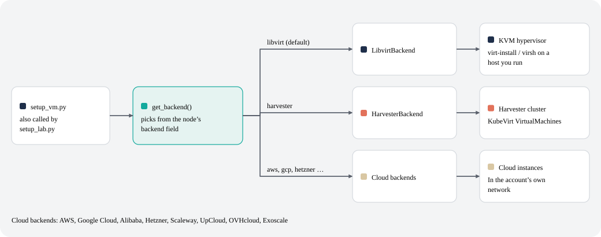
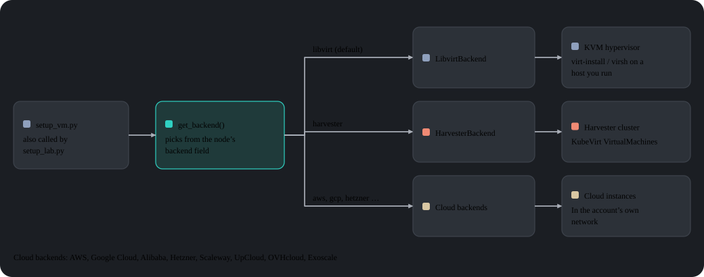
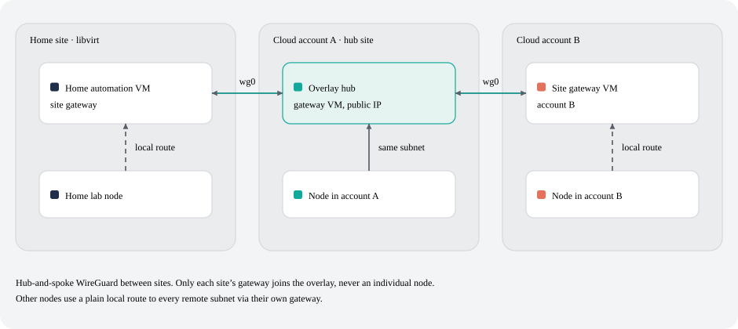
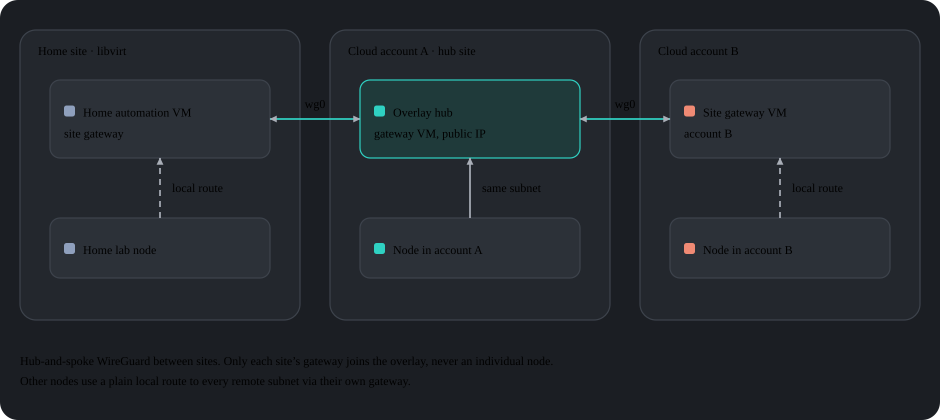
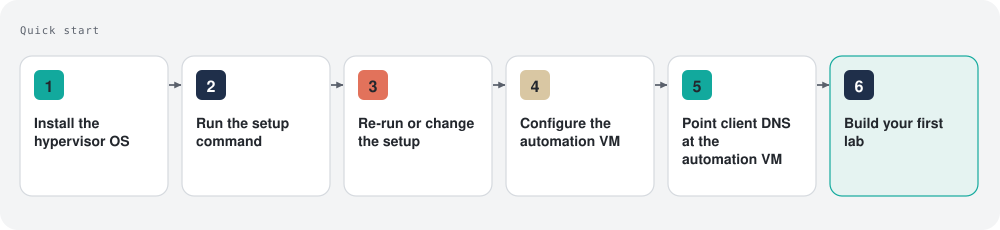
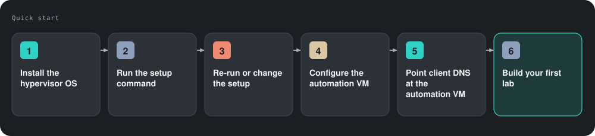
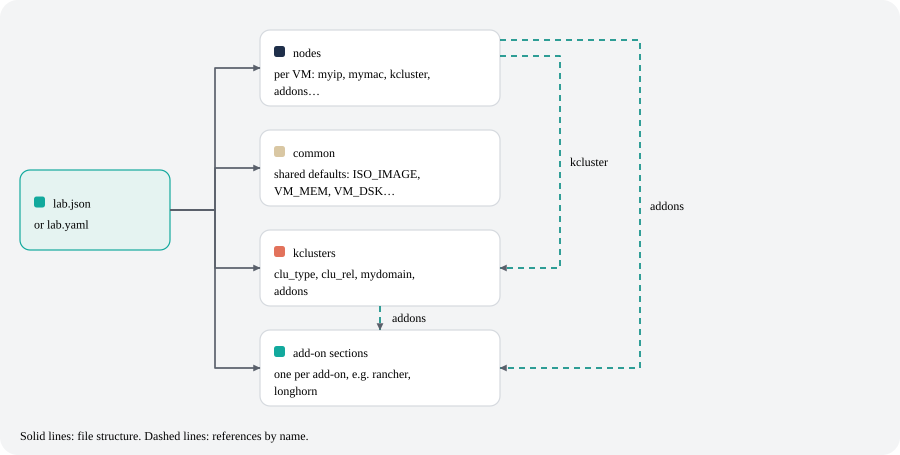
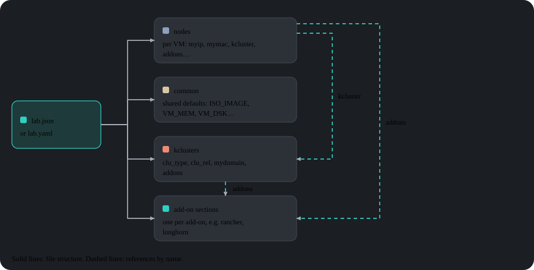

Why lab-in-a-box?
- One file, one command. Describe VMs, Kubernetes clusters (RKE2 or K3s) and add-ons declaratively.
setup_lab.pybuilds them in dependency order, without you runningvirt-installor Ansible by hand. - Home lab or cloud, same definition. Lab VMs run on KVM hosts you own, on Harvester HCI, or on AWS, Google Cloud, Alibaba Cloud, Hetzner, Scaleway, UpCloud, OVHcloud or Exoscale. Labs can span several KVM hosts, and a single lab can mix clouds and sites through a cross-cloud WireGuard overlay.
- 71 ready-made add-ons. Rancher, Longhorn, NeuVector, Harbor, Keycloak, Jenkins, Argo CD, SUSE Multi-Linux Manager/Uyuni, Nextcloud and more, plus intentionally vulnerable demo apps for security training.
- A web UI that follows the code. lab-builder renders each form from the add-on's own schema, so a new field in a script shows up in the UI with no front-end change.
- Pluggable provisioning. Ignition and Combustion for SLE Micro, cloud-init for openSUSE and Ubuntu,
virt-customizefor legacy images, or a scripted install from an installer ISO (AutoYaST, Kickstart, Preseed or AutoInstall). - Credentials kept out of the lab file. Cloud and service credentials can live in per-account encrypted files (Argon2id key derivation, then AES-256-GCM and ChaCha20-Poly1305 in cascade).
- Containerized tests. Every check runs in a disposable podman container, and a pre-commit hook runs the relevant ones.
Table of Contents
- Architecture
- How it works
- Quick Start
- Web UI (lab-builder)
- Lab definition format
- Examples
- Step-by-Step Walkthroughs
- Available commands
- Available addons
- Configuration reference
- Testing
- Contributing / Developer setup
Architecture
The system is built around a two-tier architecture:


Hypervisor node(s)
One or more physical/bare-metal machines running KVM/QEMU. Each hosts lab VMs and holds QCOW2 source images in /var/lib/libvirt/images/sources/. A NUC, a workstation, or any x86_64 machine capable of running KVM will do. Labs that need more capacity than one box can span multiple KVM hosts — see multi-host labs below.
Automation VM
A small VM running on the hypervisor that acts as the control plane for the entire lab. It provides:
- DNS — BIND (
named) serves the lab domain and forwards external requests, so all lab hostnames resolve from any client pointing at it - HTTP — serves provisioning files (Ignition, Combustion, cloud-init) at
/srv/www/htdocs/lab_creation/ - Scripts — all lab management commands installed at
/usr/local/bin/ - Web UI (optional) — lab-builder, a browser-based lab.json designer
All user commands are run on the automation VM. It connects to the hypervisor(s) and to created VMs via SSH. No direct hypervisor access is needed after initial setup.
Under the hood
The command-line tools and every add-on are Python 3.11, living in libs/ and scripts/ and installed to /usr/local/lib/lab_creation/ — organized around a small set of shared library modules (lab_creation.py, backends.py, services.py, spacecmd_common.py, …) rather than one another. VM creation is behind a pluggable VMBackend interface with ten implementations: libvirt, Harvester and eight public clouds (see Compute backends), so add-ons and orchestration code do not change between them. The bash-era implementations these replaced live on, archived, under legacy_bash/ — including the original install_ds389.
How it works
Deploy pipeline
setup_lab.py runs a fixed sequence of phases; the two Kubernetes-only phases are skipped entirely for a VM-only lab (no kclusters section):


VM provisioning
Each VM is created by:
1. Resolving which KVM host it belongs on (the explicit kvm_host field, or auto-selected by free capacity — see multi-host labs)
2. Copying and resizing a QCOW2 source image on that host
3. Generating provisioning files from templates, per its config_method
4. Registering a DNS entry in BIND
5. Running virt-install on the hypervisor over SSH
6. Waiting for SSH to become available
Provisioning method is controlled by config_method in the lab JSON (per-node or per-common):
| Value | Method | Used for |
|---|---|---|
| (empty, default) | Ignition + Combustion | SLE Micro |
cloud-init |
cloud-init ISO | openSUSE Leap, Ubuntu |
virt_customize |
Modifies the QCOW2 directly on the hypervisor (virt-customize) — no Ignition/cloud-init support needed on the guest |
CentOS 7, old Debian/RHEL, or any image lacking Ignition/cloud-init |
install_iso |
Scripted install from a real installer ISO (AutoYaST, Kickstart, Preseed, or AutoInstall, selected by install_type) |
Distros with no other provisioning path |
Compute backends
Where a node's VM is created is decided by a pluggable VMBackend interface, resolved once per node from its backend field (or cloud_account, which implies the backend). The default is libvirt. Every add-on and orchestration script talks to the resolved backend the same way, whichever one it is:
| Backend | Where the VM runs |
|---|---|
libvirt |
A KVM/QEMU hypervisor you run (the default) |
harvester |
A Harvester HCI cluster, as KubeVirt VirtualMachines |
aws |
Amazon EC2 |
gcp |
Google Compute Engine |
alibaba |
Alibaba Cloud ECS |
hetzner |
Hetzner Cloud |
scaleway |
Scaleway Instances |
upcloud |
UpCloud |
ovhcloud |
OVHcloud Public Cloud |
exoscale |
Exoscale |


Kubernetes setup
After VMs are up, setup_lab.py installs Kubernetes on each node according to the kclusters section of the JSON. RKE2 and K3s are both supported, and clu_type: harvester builds a Harvester / SUSE Virtualization cluster on AWS from an AMI (see Harvester / SUSE Virtualization on AWS). Once a cluster is ready, its add-ons run in sequence; VM-level add-ons (attached to a single node rather than a cluster) run after that node is provisioned.
Multi-host labs
A lab isn't limited to one hypervisor. Set KVM_HOSTS (space-separated) in /etc/lab_creation.cfg on the automation VM to make more than one hypervisor available:
KVM_HOSTS="hv1.mydemo.lab hv2.mydemo.lab hv3.mydemo.lab"
Then, for each node in the lab JSON, either:
- pin it explicitly — "kvm_host": "hv2.mydemo.lab" in that node's config, or
- let it auto-select — omit kvm_host; the node lands on whichever configured host currently has enough free CPU/RAM/disk for it (probed live over SSH).
Nodes that don't specify kvm_host and boxes with only one configured host behave exactly as before this feature existed — nothing changes for a single-hypervisor lab.
Cross-cloud WireGuard overlay
A cloud lab node generally cannot reach another cloud account's private network, or the home libvirt lab, over the network at all — each is its own isolated VPC/network. common.overlay: true in the lab JSON routes this lab's SITES to each other, site-to-site, by their real subnets, over a hub-and-spoke WireGuard overlay (libs/overlay.py):


Only each site's own gateway ever joins the overlay itself — never an individual lab node. A "site" is the home libvirt lab or one cloud account; its gateway is either the home site's own automation VM (mysource in /etc/lab_creation.cfg) or, for a cloud account, a small dedicated VM auto-created/reused there (lab-overlay-gw-<backend>[-<account>], the same naming convention as the cloud DNS VM). Every OTHER node just gets a plain, persistent local route to each other site's real subnet, via its own site's gateway — that's the whole mechanism, no per-node WireGuard membership at all.
OVERLAY_HUB_ACCOUNT (required, in /etc/lab_creation.cfg) names the cloud account whose gateway VM is the hub — the one site with a stable public IP everyone else connects to. OVERLAY_CIDR (default 10.99.0.0/16) is used only for the gateways' own point-of-presence addresses on the tunnel, not for routing real traffic; OVERLAY_WG_PORT (default 51820) is the hub's listen port. Joining/leaving and route-pushing happen automatically as part of setup_vm.py — nothing else to run by hand.
Known gaps: no DNS changes are made (a node is reachable by its real hostname once that name resolves into a now-routed subnet, not before); a site's already-provisioned nodes aren't retroactively re-routed when a new remote site joins later, only refreshed at each node's own provisioning time; AWS needs its site gateway's "source/dest check" disabled to forward traffic (handled automatically) — no equivalent exists yet for the other 7 cloud backends.
Library loading order
Every script sources configuration in this order:
/etc/lab_creation.defaults— system defaults, paths, package lists/usr/local/lib/lab_creation/primary.py— input validation, config loading/etc/lab_creation.cfg— node-specific settings (REMOTE_HOST,ROOT_SSH_KEY,VIRT_SRV,KVM_HOSTS, etc.)/usr/local/lib/lab_creation/lab_creation.py— VM, DNS, and orchestration functions/usr/local/lib/lab_creation/k8s.py— Kubernetes cluster functions
Quick Start


Requirements
- A machine capable of running KVM (Intel VT-x or AMD-V enabled)
- Internet access (or a local mirror) for package and image downloads
- A QCOW2 image for your chosen OS placed at
/var/lib/libvirt/images/sources/on the hypervisor
Tested images: - SLE Micro — recommended, used with Ignition+Combustion - openSUSE Leap Micro — supported, used with cloud-init
Step 1 — Install the hypervisor OS
Install one of these on your hardware; a minimal or server installation is enough, and no bridge or extra package is needed beforehand:
| Family | Versions |
|---|---|
| openSUSE Leap, SLES | 15 (SP6+), 16 |
| Debian, Ubuntu | Debian 12, 13; Ubuntu 22.04, 24.04 |
| RHEL, Rocky Linux, AlmaLinux, CentOS Stream, Fedora | 9, 10; current Fedora |
Other versions of these families get the newest matching package list with a warning that it was not verified for them. SLES needs a registration code (asked for during setup) unless the host is already registered.
On RHEL-family and Fedora hypervisors the host setup completes, but the automation VM cannot be built there yet: libguestfs on those systems cannot read the btrfs filesystem of its openSUSE Leap image. Create the automation node on a host of another family for now.
Writing a bootable USB from Linux
# Before inserting USB:
cat /proc/partitions > /tmp/partb4
# Insert USB, then:
cat /proc/partitions > /tmp/parta
# Find the new device:
diff /tmp/part*
# Write the ISO (replace sdX with your device):
dd if=SLE-15-SP6-Online-x86_64-GM-Media1.iso of=/dev/sdX bs=4k && sync
Step 2 — Run the setup command
On the hypervisor, as root:
curl -fsSL https://raw.githubusercontent.com/SUSE-Technical-Marketing/lab-in-a-box/main/install_demo_server_scripts.sh | sudo bash
It installs git and Python, fetches lab-in-a-box into /var/tmp/setup_demo_server/ and runs setup_demo_server/setup_kvm_node.py. It takes the lab settings from its options and this host's own values; with --interactive it asks for each one instead, with those values as defaults:
- Lab network:
bridgeputs the lab VMs on the host's LAN;natuses a private libvirt network instead (for a laptop or single-NIC host) - Lab DNS domain (default
mydemo.lab), the automation VM's IP address (a free address on the lab network is suggested) and its root password - On SLES, the registration code
The network, gateway, DNS server, timezone and SSH key (~/.ssh/id_ed25519.pub, created if missing) are taken from the host. The answers are written to setup_demo_server/lab.cfg; after a summary (and, with --interactive, a confirmation), the setup:
- installs the hypervisor packages for the detected distribution (EPEL and CRB are enabled on RHEL-family hosts);
- in bridge mode, turns the NIC carrying the default route into a port of
br0, keeping the host's address. NetworkManager, netplan, wicked, systemd-networkd and ifupdown are supported. A timer restores the previous network configuration unless the gateway still answers through the bridge, so a failed change cannot leave the host unreachable; - configures libvirt and creates the automation VM.
Every setting can be given as an option, for example in an unattended run from cloud-init:
curl -fsSL https://raw.githubusercontent.com/SUSE-Technical-Marketing/lab-in-a-box/main/install_demo_server_scripts.sh \
| sudo bash -s -- --domain mydemo.lab --automation-ip 192.168.8.71 --root-password 'secret'
Without --root-password (or LAB_ROOT_PASSWORD), a password is generated and printed at the end, unless --interactive asks for one. Run python3 /var/tmp/setup_demo_server/setup_demo_server/setup_kvm_node.py --help for every option.
Step 3 — Re-running or changing the setup
Running the command again uses the existing lab.cfg as is; options that map to its settings (for example --network-mode nat) update them first, and --reconfigure asks for everything again. To review or edit lab.cfg before anything is changed, fetch the code only:
curl -fsSL https://raw.githubusercontent.com/SUSE-Technical-Marketing/lab-in-a-box/main/install_demo_server_scripts.sh | sudo bash -s -- --fetch-only
To set up another machine from this one, pass its address; the code is copied there over SSH and the same options apply:
python3 /var/tmp/setup_demo_server/setup_demo_server/setup_kvm_node.py <IP>
Key settings in lab.cfg:
| Setting | Description |
|---|---|
_network_mode, _bridge_name, _bridge_nic |
Bridge or NAT networking; the bridge the lab VMs attach to and the NIC that becomes its port |
_mynet, _mygw, _mydns, _myip |
Lab network, gateway, upstream DNS and the automation VM's address |
ROOT_PWD_HASH, ROOT_SSH_PUB_KEY |
Automation VM root password hash and the SSH key allowed to log in |
AUTOMATION_HOSTNAME |
Hostname for the automation VM (e.g. automation.mydemo.lab) |
_QCOW_IMAGE |
Filename of the source QCOW2 image |
Step 4 — Configure the automation VM
SSH into the automation VM and install the lab scripts:
ssh <AUTOMATION_HOSTNAME>
./install_automation_node_scripts.sh
cp /etc/lab_creation.cfg.example /etc/lab_creation.cfg
vim /etc/lab_creation.cfg
Key settings in lab_creation.cfg:
| Setting | Description |
|---|---|
REMOTE_HOST |
Hostname or IP of the (primary) KVM hypervisor |
KVM_HOSTS |
(optional) space-separated list of additional hypervisors for a multi-host lab |
ROOT_SSH_KEY |
Content of the SSH public key to inject into VMs |
VIRT_SRV |
libvirt connection URI (e.g. qemu+ssh://root@hypervisor/system) |
NETWORK |
Default libvirt network for VMs (e.g. bridge=br0) |
HTTP and HTTPS. The automation VM serves its files on port 80 (HTTP) and port 443 (HTTPS, self-signed certificate in /etc/lab_creation/tls/). Installers (AutoYaST, kickstart, preseed) and Helm fetch them over HTTPS and accept the self-signed certificate. Set PROVISIONING_TLS_VERIFY=1 to verify it instead, or PROVISIONING_BASE_URL (e.g. http://192.168.88.250) to use another address or go back to HTTP. Harvester's iPXE netboot always uses HTTP: iPXE cannot accept a self-signed certificate.
Step 5 — Point your client DNS at the automation VM
For hostnames to resolve from your desktop:
# Linux (NetworkManager):
nmcli con mod <connection> ipv4.dns <AUTOMATION_IP>
# Or add to /etc/resolv.conf:
nameserver <AUTOMATION_IP>
Step 6 — Build your first lab
setup_lab.py examples/cluster.json.template
See Examples below for more starting points, or open the web UI instead of writing JSON by hand.
Web UI (lab-builder)
A browser-based designer for lab.json files that introspects the project's own Python libraries at run time — it has no hardcoded knowledge of any add-on. Pick a component and it renders a form straight from that component's schema; add a field to a script and the UI shows it with zero front-end changes.
# Fastest way to try it — zero dependencies beyond Python:
python3.11 webui/run-local.py # → http://localhost:8677/
For production deployment (Apache, or a standalone systemd/init-independent service, plus HTTPS via an idempotently-generated self-signed cert), see README.webui.md — it covers all three deploy modes, the HTTP API, and troubleshooting.
Lab definition format
Labs are defined as JSON or YAML files (auto-detected — see the note below). The current format supports multiple Kubernetes clusters per lab (kclusters); see examples/cluster.json.template for the legacy single-cluster format (cluster).


{
"nodes": {
"node101.mydemo.lab": {
"myip": "192.168.88.101",
"mymac": "34:8a:b1:4b:1a:c1",
"INSTALL_RKE2_TYPE": "server", // "server" or "agent"
"kcluster": "cluster1" // which kclusters entry this node belongs to
},
"node102.mydemo.lab": {
"myip": "192.168.88.102",
"mymac": "34:8a:b1:4b:1a:c2",
"INSTALL_RKE2_TYPE": "agent",
"kcluster": "cluster1"
}
},
"common": {
"ISO_IMAGE": "SL-Micro.x86_64-6.1-Default-qcow-GM.qcow2",
"VM_MEM": "24576",
"VM_DSK": "80",
"VM_CPU": "6",
"VM_BOOT": "uefi", // uefi (default), firmware=bios, bios, uefi=off
"mymask": "24",
"mygw": "192.168.88.1",
"mydns": "192.168.88.73",
"mynet_reverse": "88.168.192"
},
"kclusters": {
"cluster1": {
"clu_type": "rke2", // "rke2", "k3s" or "harvester"
"clu_rel": "stable",
"mydomain": "mydemo.lab",
"addons": ["rancher", "longhorn"]
}
},
"rancher": {
"rancher_shorthn": "rancher",
"rancher_rel": "rancher-prime",
"rancher_repo_url": "https://charts.rancher.com/server-charts/prime",
"rancher_helm_rel": "rancher",
"rancher_helm_chart": "rancher-prime/rancher",
"rancher_Version": "--version 2.13.3",
"cert_manager_ver": "--version v1.14.4"
}
}
Same lab, as YAML
nodes:
node101.mydemo.lab:
myip: "192.168.88.101"
mymac: "34:8a:b1:4b:1a:c1"
INSTALL_RKE2_TYPE: server # "server" or "agent"
kcluster: cluster1 # which kclusters entry this node belongs to
node102.mydemo.lab:
myip: "192.168.88.102"
mymac: "34:8a:b1:4b:1a:c2"
INSTALL_RKE2_TYPE: agent
kcluster: cluster1
common:
ISO_IMAGE: SL-Micro.x86_64-6.1-Default-qcow-GM.qcow2
VM_MEM: "24576"
VM_DSK: "80"
VM_CPU: "6"
VM_BOOT: uefi # uefi (default), firmware=bios, bios, uefi=off
mymask: "24"
mygw: "192.168.88.1"
mydns: "192.168.88.73"
mynet_reverse: "88.168.192"
kclusters:
cluster1:
clu_type: rke2 # "rke2", "k3s" or "harvester"
clu_rel: stable
mydomain: mydemo.lab
addons: [rancher, longhorn]
rancher:
rancher_shorthn: rancher
rancher_rel: rancher-prime
rancher_repo_url: https://charts.rancher.com/server-charts/prime
rancher_helm_rel: rancher
rancher_helm_chart: rancher-prime/rancher
rancher_Version: "--version 2.13.3"
cert_manager_ver: "--version v1.14.4"
Optional node-level fields:
| Field | Description |
|---|---|
addons |
List of addon scripts to run for this specific VM only — see below for per-node config overrides |
config_method |
Override provisioning method (cloud-init, virt_customize, install_iso) |
kvm_host |
Pin this VM to a specific hypervisor in a multi-host lab |
extra_dsk |
Additional disk(s) to attach — "/dev/sdb", or "/dev/sdb,bus=scsi" to override the default bus per disk |
salt_states |
Salt states to apply (cloud-init method only) |
VM_MACHINE |
virt-install machine type override — "" (default, virt-install's own choice, currently q35) or "pc" (legacy i440fx), for an old guest whose kernel/GRUB can't find its root disk under q35 — see Deploying a legacy image (CentOS 7) |
Per-node addon config overrides: every addon has one shared top-level config
section (e.g. client_registration in the earlier SMLM example) used by every node that lists it
in addons. When different nodes genuinely need different values for that same addon — the
motivating case: a lab registering many different OSes against one shared Uyuni/SMLM server,
where every node needs its own client_registration_activation_key — give that one node's
addons[] entry a nested override instead of a plain string:
"nodes": {
"mercury.mydemo.lab": {
"addons": [
{ "client_registration": { "client_registration_activation_key": "1-sles15sp7" } }
]
},
"callisto.mydemo.lab": {
"addons": [
"mariadb",
{ "client_registration": { "client_registration_activation_key": "1-debian13" } }
]
}
}
A plain "mariadb" string entry behaves exactly as before (only the shared top-level mariadb
section applies). The {"client_registration": {...}} form overrides just those fields, for
that node only — anything the override doesn't mention (server, admin user, …) still comes from
the shared client_registration section. This works the same way for any addon, not just
client_registration; each install_<addon>.py opts in by reading its config via
k8s.addon_node_config(definition, "<addon>", vm_name) instead of definition.get("<addon>", {})
directly — see libs/apps.py's addon_entry_name()/addon_entry_overrides() for the shared
parsing every consumer of an addons[] list goes through.
Optional kcluster fields:
| Field | Description |
|---|---|
mgm_node |
Hostname of the node that runs cluster addon installers; defaults to first server node |
Every add-on script also accepts --schema (alias for --input-definition), which prints its own configuration keys as machine-readable JSON or YAML — the same schema the web UI reads to build its forms:
install_longhorn --schema
setup_lab.py --input-definition yaml # base topology schema (common/nodes/kclusters)
Examples
Minimal single-VM lab
The smallest possible lab — one VM, no Kubernetes:
{
"nodes": {
"standalone.mydemo.lab": { "myip": "192.168.88.50" }
},
"common": {
"ISO_IMAGE": "SL-Micro.x86_64-6.1-Default-qcow-GM.qcow2",
"VM_MEM": "4096", "VM_DSK": "40", "VM_CPU": "2",
"mymask": "24", "mygw": "192.168.88.1", "mydns": "192.168.88.73"
}
}
setup_lab.py standalone.json
RKE2 + Rancher + Longhorn (the "hello world" cluster)
A 2-node cluster with a management platform and distributed storage — see the full Lab definition format example above.
setup_lab.py rancher-cluster.json
# Re-run later, skipping any VM that's already up and reachable:
setup_lab.py --keep rancher-cluster.json
Spreading a cluster across two hosts
Pin the server to one hypervisor and let the agents auto-place on whichever of the configured hosts has room:
{
"nodes": {
"srv1.mydemo.lab": { "myip": "192.168.88.10", "kvm_host": "hv1.mydemo.lab", "kcluster": "prod" },
"agent1.mydemo.lab": { "myip": "192.168.88.11", "kcluster": "prod" },
"agent2.mydemo.lab": { "myip": "192.168.88.12", "kcluster": "prod" }
},
"common": { "ISO_IMAGE": "SL-Micro.x86_64-6.1-Default-qcow-GM.qcow2", "VM_MEM": "8192", "VM_DSK": "60", "VM_CPU": "4" },
"kclusters": { "prod": { "clu_type": "rke2", "clu_rel": "stable", "mydomain": "mydemo.lab" } }
}
SUSE Multi-Linux Manager (Uyuni) server + a registered client
Stand up an Uyuni server with an activation key, then register a second VM against it as a Salt client — see Available addons for the full feature set (orgs, RBAC, Content Lifecycle Management, Ansible integration, and more):
{
"nodes": {
"uyuni.mydemo.lab": { "myip": "192.168.88.30", "addons": ["uyuni"] },
"client1.mydemo.lab": { "myip": "192.168.88.31", "addons": ["client_registration"] }
},
"common": { "ISO_IMAGE": "SL-Micro.x86_64-6.1-Default-qcow-GM.qcow2", "VM_MEM": "8192", "VM_DSK": "60", "VM_CPU": "4" },
"uyuni": {
"uyuni_admin": "admin", "uyuni_password": "Uyuni12345",
"uyuni_activation_key": "1-lab-clients", "uyuni_activation_key_base_channel": "sle-micro-6.1-pool"
},
"client_registration": {
"client_registration_server_type": "uyuni",
"client_registration_server": "uyuni.mydemo.lab",
"client_registration_activation_key": "1-lab-clients"
}
}
Harvester / SUSE Virtualization on AWS
A kclusters entry with clu_type: "harvester" builds a Harvester cluster from EC2 instances.
Each node boots a Harvester AMI that you supply (SUSE publishes none; jdreinhardt/harvester-on-aws
builds one from the Harvester ISO) and installs itself at first boot from the Harvester configuration lab-in-a-box passes as its
user-data. The first node of the cluster in the file creates the cluster; the others join it through the cluster VIP.
{
"common": { "backend": "aws", "config_method": "cloud-init", "cloud_account": "aws-main", "VM_MEM": 65536, "VM_CPU": 16, "VM_DSK": 250,
"SOURCE_IMAGE": "ami-0123456789abcdef0", "cloud_instance_type": "m8i.4xlarge",
"aws_nested_virtualization": "true" },
"nodes": {
"harv1.mydemo.lab": { "kcluster": "harv" },
"harv2.mydemo.lab": { "kcluster": "harv", "harvester_role": "worker" }
},
"kclusters": {
"harv": { "clu_type": "harvester", "clu_rel": "v1.9.0", "mydomain": "mydemo.lab",
"harvester_token": "change-me", "harvester_replica_count": 1 }
}
}
- Nodes must use the
awsbackend,aws_nested_virtualization: "true"with a supportedcloud_instance_type(M7i/M8i/C7i/R7i/I7i families; see Compute backends), and the Harvester AMI ID asSOURCE_IMAGE. 250 GiB is the AMI's minimum disk. - Cluster fields:
harvester_token(required, shared by every node);harvester_vip(default: a free address ofAWS_SUBNET_ID, registered as a secondary private IP on the create node);harvester_mtu(default 1500, the same on every node);harvester_replica_count(set 1 below 3 nodes);harvester_device(default/dev/nvme0n1p6, the community AMI's layout);harvester_ntp_servers(default the AWS time service, 169.254.169.123);harvester_config(merged last into every node's Harvester configuration);harvester_settings(Harvester Settings applied once the cluster is up). Per node:harvester_role(default, management, worker, witness). - Access: the nodes accept the automation node's SSH key for the
rancheruser (Harvester blocks root SSH), and the lab'sROOT_PWD_HASHas the password. The security group gets 80, 443, 6443 and 9345 and all traffic between its own instances. When the cluster is up,setup_lab.pyprints the UI address (https://<create node>/) and keeps the kubeconfig in/etc/lab_creation/harvester-<cluster>.kubeconfig. - Limits: the VIP stays on the create node (AWS does not move a secondary IP, so it does not fail over); EC2 drops frames from foreign MAC addresses, so Harvester VMs cannot use bridged VLAN networks; add-ons are not installed on a Harvester cluster yet; each node costs roughly what its instance type costs per hour plus 250 GiB of EBS.
Deploying a legacy image (CentOS 7)
CentOS 7 (and other pre-built .qcow2 images that old) has neither Ignition/Combustion nor
cloud-init built in, so config_method must be virt_customize (see
VM provisioning) — it edits the qcow2 filesystem directly instead of relying
on an in-guest agent. Two more overrides matter for an image this old:
VM_BOOT: "bios"— CentOS 7's GRUB expects legacy BIOS, not this project's UEFI default.VM_MACHINE: "pc"— works with a 2015 CentOS 7 GenericCloud image (kernel3.10.0-229): booted under virt-install's own machine-type default (currentlyq35), it hangs forever in a dracut emergency shell (Not all disks have been found) — its virtio-blk root disk never shows up in time under Q35's PCIe topology. The identical disk boots straight through under the legacy i440fx chipset ("pc"). This is a chipset/old-kernel incompatibility, not anything specific to this project — the same override applies to any sufficiently old guest.
{
"nodes": {
"legacy1.mydemo.lab": {
"myip": "192.168.88.120",
"config_method": "virt_customize",
"ISO_IMAGE": "CentOS-7-x86_64-GenericCloud-20150628_01.qcow2",
"VM_BOOT": "bios",
"VM_MACHINE": "pc"
}
},
"common": { "VM_MEM": "2048", "VM_DSK": "30", "VM_CPU": "1", "VM_ROOT_PASS": "12345678" }
}
setup_lab.py legacy.json
VM_ROOT_PASS (in common, or per-node) sets the root password virt_customize bakes into the
image directly — omit it to reuse ROOT_PWD_HASH from lab_creation.cfg instead, the same
fallback cloud-init and Ignition use.
More distros (AlmaLinux, Debian, Rocky Linux, Alibaba Cloud Linux, and a documented not-yet-working attempt at Raspberry Pi OS) are in EXAMPLES.md, kept separate so this section doesn't grow without bound.
Step-by-Step Walkthroughs
The Examples above are copy-paste starting points. These three walk through complete, real scenarios end to end — what to run, what happens at each step, and how to verify it actually worked. Every JSON field and command shape below matches this project's own test suite (tests/run_tests.sh) and source.
Walkthrough 1 — Your first cluster: RKE2 + Rancher + Longhorn
Goal: two SLE Micro VMs, an RKE2 cluster, Rancher for management, Longhorn for storage — reachable from your browser at the end.
- Write the lab file. Save this as
rancher-cluster.json(adjust IPs/network to your lab domain):
{
"nodes": {
"node101.mydemo.lab": {
"myip": "192.168.88.101", "mymac": "34:8a:b1:4b:1a:c1",
"INSTALL_RKE2_TYPE": "server", "kcluster": "cluster1"
},
"node102.mydemo.lab": {
"myip": "192.168.88.102", "mymac": "34:8a:b1:4b:1a:c2",
"INSTALL_RKE2_TYPE": "agent", "kcluster": "cluster1"
}
},
"common": {
"ISO_IMAGE": "SL-Micro.x86_64-6.1-Default-qcow-GM.qcow2",
"VM_MEM": "24576", "VM_DSK": "80", "VM_CPU": "6",
"mymask": "24", "mygw": "192.168.88.1", "mydns": "192.168.88.73"
},
"kclusters": {
"cluster1": {
"clu_type": "rke2", "clu_rel": "stable", "mydomain": "mydemo.lab",
"addons": ["rancher", "longhorn"]
}
},
"rancher": {
"rancher_shorthn": "rancher", "rancher_rel": "rancher-prime",
"rancher_repo_url": "https://charts.rancher.com/server-charts/prime",
"rancher_helm_rel": "rancher", "rancher_helm_chart": "rancher-prime/rancher",
"rancher_Version": "--version 2.13.3", "cert_manager_ver": "--version v1.14.4"
}
}
- Build it:
setup_lab.py rancher-cluster.json
setup_lab.py preflights the file automatically before doing anything else — bad IPs, a kcluster reference that doesn't exist, a missing ISO_IMAGE, and similar mistakes get caught and printed (✗ Preflight FAILED — N error(s)) with nothing created, rather than failing partway through. A clean file prints ✓ Preflight passed and proceeds straight to building.
In order, this: registers both nodes in DNS → creates both VMs (copies the QCOW2 image, generates Combustion files, boots them, waits for SSH) → installs RKE2 on node101 as server, then node102 as agent → installs rancher and longhorn on the cluster's management node (mgm_node, defaulting to the first server node — node101 here). A 2-node cluster with Rancher typically takes 15–25 minutes; most of it is RKE2 bootstrapping and Rancher's own Helm install.
- Verify DNS resolves (from your own desktop, once it's pointed at the automation VM's DNS):
dig +short node101.mydemo.lab rancher.mydemo.lab
Both should return 192.168.88.101 (Rancher's ingress hostname is the rancher_shorthn value, rancher, under the cluster's mydomain).
-
Log in. Browse to
https://rancher.mydemo.lab(self-signed cert — your browser will warn once) and log in withrancher_initial_pwdfrom/etc/lab_creation.cfgon the automation VM. -
Iterate without rebuilding everything. Changed one node's config, or a VM crashed? Re-run with
--keep: any VM that already exists, matches its defined IP/MAC, and is SSH-reachable is left alone; only what's actually missing or broken gets (re)created:
setup_lab.py --keep rancher-cluster.json
- Tear it down when you're done:
destroy_lab.py rancher-cluster.json
Walkthrough 2 — SUSE Multi-Linux Manager (Uyuni) server with a registered client
Goal: an Uyuni server with a real activation key, and a second VM that registers itself as a Salt-managed client against it. Live-tested end to end against a real Uyuni server.
- Write the lab file — one node for the Uyuni server, one for the client:
{
"nodes": {
"uyuni.mydemo.lab": { "myip": "192.168.88.30", "addons": ["uyuni"] },
"client1.mydemo.lab": { "myip": "192.168.88.31", "addons": ["client_registration"] }
},
"common": {
"ISO_IMAGE": "SL-Micro.x86_64-6.1-Default-qcow-GM.qcow2",
"VM_MEM": "8192", "VM_DSK": "60", "VM_CPU": "4",
"mymask": "24", "mygw": "192.168.88.1", "mydns": "192.168.88.73", "mydomain": "mydemo.lab"
},
"uyuni": {
"uyuni_admin": "admin", "uyuni_password": "Uyuni12345",
"uyuni_activation_key": "1-lab-clients", "uyuni_activation_key_base_channel": "sle-micro-6.1-pool"
},
"client_registration": {
"client_registration_server_type": "uyuni",
"client_registration_server": "uyuni.mydemo.lab",
"client_registration_activation_key": "1-lab-clients"
}
}
- Build it:
setup_lab.py uyuni-lab.json
VM-level addons (both uyuni and client_registration are node-attached, not cluster-attached, since there's no kclusters section here) run once their own node is up. install_uyuni brings up the server, waits for it to become reachable, then creates the activation key. install_client_registration then bootstraps client1 against it — installs the bootstrap script, runs it, and polls until the new minion's Salt key shows up as pending, then accepts it.
- Verify the client actually registered. SSH into the Uyuni server and ask it directly:
ssh uyuni.mydemo.lab
mgrctl exec 'spacecmd -- system_list'
client1.mydemo.lab should be in the list.
- Log in to the web UI at
https://uyuni.mydemo.labwithuyuni_admin/uyuni_passwordto see the same thing visually, browse the activation key, or run a highstate.
Known upstream rough edge (not this project's bug, documented in case you hit it): salt-transactional-update's own package upgrade scriptlet can leave a duplicate YAML key in /etc/salt/minion.d/transactional_update.conf on the client, crash-looping salt-minion until it's manually deduplicated. Nothing in this repo touches that file.
Walkthrough 3 — Automation VM under NAT (single-NIC laptop as the hypervisor)
Goal: bootstrap the automation VM on a host with no spare NIC to bridge — a private libvirt-managed network instead, with specific ports DNAT'd in from the host's own real IP. Live-tested end to end on a disposable nested VM.
This changes nothing about the default Quick Start flow if you don't opt in — _network_mode defaults to "bridge", byte-for-byte the same as every existing setup.
- In
lab.cfg(Quick Start Step 3), set:
_network_mode="nat"
_nat_network_name="labnat" # default shown — a new libvirt virtual network, not your host's real LAN
_nat_network_cidr="192.168.150.0/24" # default shown
_nat_forwarded_ports="22:22/TCP 80:80/TCP 443:443/TCP" # default shown — "<port on the HYPERVISOR's real IP>:<port on the AUTOMATION VM>/<protocol>"
This forwards ports 22/80/443 on the hypervisor's own real, externally-reachable IP (<external>) through to the same ports on the automation VM's private NAT address (<internal>) — the automation VM is the only thing listening on this private network at this point, so "internal" always means "on the automation VM" here. (Step 5 below reuses this exact same <external>:<internal>/<protocol> syntax to forward into a lab VM instead, once one exists — there, "internal" shifts to mean that VM's own private NAT address, not the automation VM's.)
- Run the setup exactly as usual:
./setup_kvm_node.py
This defines the labnat libvirt network (NAT'd, DHCP/gateway handled by libvirt itself — the same mechanism as libvirt's own built-in default network, just under this project's own name/CIDR) instead of a bridge, then creates the automation VM on it with a static IP inside that private range, then DNAT-forwards the three ports above in from the host's own real IP.
- Verify the network and forwarding rules exist, on the hypervisor:
virsh net-list # labnat: active
iptables -t nat -L LAB_PORTFWD -n -v # DNAT rules to the automation VM's private IP
iptables -L LAB_PORTFWD_FWD -n -v # matching FORWARD-chain ACCEPT rules
- Reach the automation VM from outside the hypervisor, using the hypervisor's own real IP — not the automation VM's private
192.168.150.xaddress, which isn't routable from anywhere else:
ssh root@<hypervisor-real-ip> # DNAT'd to the automation VM's SSH, port 22
Ports 80 and 443 are forwarded too by default (the provisioning-file HTTP server and, once you set up the web UI, its HTTPS listener) — reachable the same way, through the hypervisor's real IP.
- Add forwarding for a lab VM, not just the automation VM itself: give that node a
forwarded_portsfield and enable theportforwardservice once, incommon.services:
{
"nodes": {
"app1.mydemo.lab": {
"myip": "192.168.150.20",
"forwarded_ports": ["8080:80/TCP", "8443:443/TCP"]
}
},
"common": { "services": ["portforward"], "...": "…rest of common as usual" }
}
setup_lab.py/setup_vm.py DNAT-forward those two ports in from the hypervisor's real IP the same way, the first time any node in the lab declares forwarded_ports.
Available commands
All commands run on the automation VM and take a JSON lab definition file as their first argument.
| Command | Description |
|---|---|
setup_lab.py [--keep] <lab.json> |
Create all VMs, set up Kubernetes clusters, and install every cluster-level and VM-level addon in order. --keep skips any VM that already exists, matches the defined IP/MAC, and is SSH-reachable — without it, every VM is destroyed and recreated. |
setup_vm.py <lab.json> <hostname> |
Create or recreate a single VM |
destroy_vm.py <lab.json> <hostname> |
Destroy a single VM |
destroy_lab.py <lab.json> |
Destroy all VMs in a lab |
Every command and every install_<addon> script supports:
setup_lab.py --version # print the installed version
install_longhorn --schema # print this addon's configuration schema (JSON)
install_longhorn --schema yaml # ...or YAML
Available addons
Addons are referenced by name in the addons array of a kcluster or node. The corresponding install_<name> script must be on PATH.
Jump to: Kubernetes & GitOps · Security & compliance · SUSE Multi-Linux Manager / Uyuni · Storage & databases · Collaboration & file sharing · CI/CD & tooling · AI / ML · Virtualization · Demo applications · Games
Kubernetes platform & GitOps
| Addon name | Description |
|---|---|
rancher |
SUSE Rancher Prime Kubernetes management platform |
longhorn |
SUSE Longhorn distributed block storage |
harbor |
Container registry |
argocd |
Argo CD GitOps controller |
kubewarden |
Kubernetes policy engine |
istio |
Service mesh |
linkerd |
Service mesh |
traefik |
Ingress controller |
nginx |
Ingress controller / reverse proxy |
coredns |
Cluster DNS |
kucero |
Kubernetes cluster certificate rotation |
fluid |
Data orchestration/caching for cloud-native workloads |
suse_observability |
SUSE Observability (StackState-based metrics/traces/topology) |
agones |
Dedicated game-server hosting/scaling (agones.dev) |
Security & compliance
| Addon name | Description |
|---|---|
neuvector |
SUSE NeuVector container security platform |
nv_testing |
NeuVector security testing workloads (nginx/node/redis pods) |
nv-demo-helm |
NeuVector Helm-based demo workloads |
complianceascode |
OpenSCAP/ComplianceAsCode operator |
keycloak |
Identity and access management |
kagent |
Kubernetes agentic-AI security assistant |
insecure_app |
Intentionally vulnerable web application (demo/training) |
struts_demo |
Apache Struts2 vulnerable demo application (CVE-2017-5638) |
SUSE Multi-Linux Manager / Uyuni
| Addon name | Description |
|---|---|
uyuni |
Uyuni server (upstream): activation keys, orgs, RBAC, Content Lifecycle Management, Ansible integration, SCAP/CVE auditing, dev/QA/prod environment topology — see install_uyuni --schema for the full field list |
smlm |
SUSE Multi-Linux Manager server — the same feature set as uyuni, deployed with Helm on Kubernetes or, with smlm_deployment: "podman", by mgradm directly on a host or VM |
smlm_proxy |
SMLM proxy |
client_registration |
Register any VM as a Salt client of an existing uyuni/smlm server (activation key bootstrap + salt-key acceptance) |
ansible_control_node |
Provisions a real Ansible control node: installs ansible-core, pushes example playbooks + a dynamic inventory script that queries uyuni/smlm's own system list, sets up SSH access to the rest of the lab. Pairs with uyuni/smlm's own *_ansible_control_nodes field, which enables the server-side "Ansible Control Node" entitlement |
Storage & databases
| Addon name | Description |
|---|---|
mariadb |
MariaDB database — Kubernetes (Helm-less manifest) or installed natively on the OS; the OS-native path (libs/db_common.py) is also reused directly by other addons (nextcloud, seafile) that need a companion database on the same host |
postgresql |
PostgreSQL database — Kubernetes (Helm) or installed natively on the OS; the OS-native path (libs/db_common.py) is also reused directly by other addons (e.g. nextcloud) that need a companion database on the same host |
openldap |
OpenLDAP directory service |
ds389 |
389 Directory Server (LDAP) |
Collaboration & file sharing
| Addon name | Description |
|---|---|
nextcloud |
Nextcloud — standalone podman containers (no Kubernetes, the only mode that supports airgapped app installs) by default, or the real community Helm chart on a Kubernetes cluster; optional Talk/Groupware/Flow/Assistant apps and ONLYOFFICE/Euro-Office/Collabora document-editing integration |
seafile |
Seafile — standalone podman containers (no Kubernetes) by default, or the real official Helm chart on a Kubernetes cluster |
CI/CD & developer tooling
| Addon name | Description |
|---|---|
jenkins |
Jenkins CI |
gitlab |
GitLab — standalone Omnibus podman container (no Kubernetes) by default, or the real official Helm chart on a Kubernetes cluster |
appcollection |
SUSE Application Collection |
stackpack |
StackState monitoring integration |
trento |
SAP infrastructure monitoring |
prometheus |
Standalone Prometheus server (podman container, no Kubernetes) — scrapes an smlm/uyuni server's own bundled exporters (smlm_monitoring_enabled) or any custom prometheus_scrape_configs targets |
grafana |
Standalone Grafana server (podman container, no Kubernetes) — auto-provisions a Prometheus datasource and, optionally, the real Grafana Labs community dashboard for an smlm/uyuni server's own exporters |
AI / ML
| Addon name | Description |
|---|---|
ollama |
Local LLM runtime |
deepseek |
DeepSeek model, served via Ollama |
apertus |
Apertus (Swiss AI Initiative) model, served via Ollama |
gemini |
Google Gemini API proxy (LiteLLM) |
anthropic |
Anthropic Claude API proxy (LiteLLM) |
openai |
OpenAI API proxy (LiteLLM) |
kimi |
Moonshot AI Kimi API proxy (LiteLLM) |
open_webui |
Chat frontend for Ollama / OpenAI-compatible endpoints |
hermes |
Hermes Agent — Nous Research's self-improving personal AI agent (Telegram/Discord/Slack bot + web dashboard) |
suse_ai |
SUSE's own Ollama + Open WebUI + Milvus AI stack |
milvus |
Milvus vector database (RAG/embedding search) |
qdrant |
Qdrant vector database (RAG/embedding search) |
weaviate |
Weaviate vector database (RAG/embedding search) |
gpu_operator |
NVIDIA GPU Operator (GPU scheduling for AI workloads) |
qwen |
Qwen2.5 model, served via Ollama |
mistral |
Mistral model, served via Ollama |
codellama |
Code Llama model, served via Ollama |
starcoder2 |
StarCoder2 model, served via Ollama |
phoebe |
(see install_phoebe --schema) |
Virtualization
| Addon name | Description |
|---|---|
harvester |
SUSE Virtualization (Harvester/KubeVirt) node provisioning |
kiwi |
KIWI appliance builder |
Demo applications
| Addon name | Description |
|---|---|
wordpress |
WordPress + MySQL demo application |
fluentd |
Log aggregation |
mailman |
GNU Mailman 3 mailing-list management + web interface |
mediagoblin |
GNU MediaGoblin federated media-publishing platform |
colt |
Colt, a git-backed blog engine on GNU Artanis |
wikimusic |
WikiMusic, a musical-knowledge CMS on GNU Artanis |
home_assistant |
Home Assistant home-automation platform |
Games
| Addon name | Description |
|---|---|
supertux_classic |
SuperTux Classic, a self-hosted open-source Godot platformer |
skynet_simulator |
Skynet Simulator, a self-hosted open-source browser puzzle/idle game |
open_saber |
Open Saber, a self-hosted open-source rhythm/block-cutting game |
To add a new addon: create an executable scripts/install_<name> in any language, with or without a file extension (install_<name>.py, install_<name>.sh, a compiled binary), add templates under templates/addons/<name>/ if needed, and reference "<name>" in the addons array of your JSON. install_automation_node_scripts.sh deploys it as /usr/local/bin/install_<name>, and setup_lab.py and the web UI use it only through its command-line contract:
install_<name> --schema jsonprints its schema as JSON, including acapabilitiesobject (targets,layers,requires_kubernetes,aux_services);--schema yamlprints the same as YAMLinstall_<name> --capabilitiesprints the same capabilities as JSONinstall_<name> --validate <lab.json>exits non-zero, printing[ERROR]lines, when its configuration is invalidinstall_<name> --versionand--helpinstall_<name> <lab.json>installs it on the VM named in$_vm_name(and the cluster in$clu_namefor a cluster add-on)
A Python add-on gets all of these from addon_common.handle_common_args() and a module-level PLUGIN dict; follow the pattern of an existing one (load the relevant JSON section via load_definition(), do the work over SSH).
Configuration reference
/etc/lab_creation.defaults
System-wide defaults loaded by every script. Defines paths, default delay timers, and package lists. Do not edit unless you know what you are doing.
/etc/lab_creation.cfg
Node-specific configuration for the automation VM. Copied from /etc/lab_creation.cfg.example during setup. Key variables:
| Variable | Description |
|---|---|
REMOTE_HOST |
KVM hypervisor hostname or IP |
KVM_HOSTS |
(optional) space-separated list of hypervisors for a multi-host lab; defaults to just REMOTE_HOST |
VIRT_SRV |
libvirt URI for remote hypervisor |
ROOT_SSH_KEY |
SSH public key content injected into provisioned VMs |
NETWORK |
Default libvirt network string |
REMOTE_DNS_SERVERS |
Space-separated list of additional DNS servers to update |
delay_min |
Minutes to wait between provisioning stages (increase on slow hardware) |
PROVISIONING_BASE_URL |
(optional) replaces https://<automation VM> in the URLs installers and Helm fetch files from, e.g. http://192.168.88.250 |
PROVISIONING_TLS_VERIFY |
0 (default) accepts the automation VM's self-signed certificate; 1 verifies it |
Compute backends
A lab's VMs default to libvirt (the KVM hypervisor(s) above). Set common.backend (or a per-node backend, which overrides it) to target a different one — see the backend field's own enum for the full current list. Each non-default backend needs its own credentials in /etc/lab_creation.cfg:
Console graphics on libvirt: lab VMs get a SPICE display (--graphics spice,listen=0.0.0.0) unless the hypervisor's QEMU has no SPICE support — SLES 16 is one — in which case they get VNC. lab-in-a-box reads this from virsh domcapabilities once per run; if that query fails, it uses SPICE.
Multiple cloud accounts — the same way KVM_HOSTS gives you multiple hypervisors: put each cloud account in its own file under /etc/lab_creation/credentials/ (path configurable via lab_creation.cfg's CREDENTIALS_PATH), as <name>.yaml (or .json/.cfg — the extension picks the parser; only .yaml/.json support the encrypted form below, since a plain .cfg's flat KEY=value format can't hold one). Each file declares cloudtype (aws/gcp/hetzner/…) plus that provider's usual connection keys — the exact same keys the backend already reads from lab_creation.cfg (AWS_REGION, AWS_PROFILE, AWS_SUBNET_ID, …). A node (or common) then selects one with "cloud_account": "<name>", exactly like "kvm_host": "<host>":
// /etc/lab_creation/credentials/aws-sandbox.yaml (built with setup_credentials.py, below)
"nodes": {
"jupiter.mydemo.lab": { "cloud_account": "aws-sandbox" },
"saturn.mydemo.lab": { "cloud_account": "aws-prod" }
}
When cloud_account is set, its cloudtype is the backend (so the backend field becomes optional; if you set both and they disagree, preflight errors), and the account file's keys are layered over lab_creation.cfg for that node only. Omit cloud_account everywhere for today's single-account behaviour, unchanged. Each account is an isolated network, so the Cloud DNS VM below becomes per-account (lab-dns-aws-sandbox, lab-dns-aws-prod, …); the unnamed default account keeps the plain lab-dns-<backend> name.
Credential files are encrypted at rest by default. Build one with:
setup_credentials.py # interactive: pick a provider, fill in its fields
setup_credentials.py --encrypt-existing myfile.yaml # encrypt an already-written plaintext file's sensitive fields
Cipher (see libs/crypto_store.py): the passphrase runs through Argon2id (a deliberately slow, memory-hard KDF — this, not the cipher, is the real security boundary for a passphrase-encrypted file) to derive a 512-bit master secret; HKDF-SHA512 then derives two independent 256-bit subkeys (domain-separated by label, not just split in half); the data is encrypted with AES-256-GCM then ChaCha20-Poly1305 in cascade — two structurally different, independently-keyed AEAD ciphers, so a catastrophic break of either single algorithm still isn't enough on its own. Any tool that needs a credential (setup_lab.py, setup_vm.py, …) prompts for its passphrase once per run (cached in process memory only, never written anywhere) via libs/primary.py's try_load_cloud_account() — the one function everything goes through.
A file can opt out of encryption with a top-level unencrypted: true (not the default — setup_credentials.py asks before writing one this way). --encrypt-existing encrypts only the sensitive-looking fields (secret/password/token-shaped names) in place, leaving e.g. AWS_REGION/AWS_PROFILE readable, and never overwrites its input — it writes <name>.encrypted.yaml alongside it for you to review and move into place. Requires the cryptography Python package (python311-cryptography, or pip install cryptography, ≥41 for Argon2id) on the automation VM — imported lazily, only when an actually-encrypted file is touched, so a lab that never sets cloud_account needs no new dependency.
External-service credentials (SCC, SUSE Application Collection, Hermes, …). The same /etc/lab_creation/credentials/ store, encryption, and setup_credentials.py tool also cover non-cloud external-service credentials — not just cloud providers. A file is marked with credential_kind (e.g. scc, appcollection, hermes) instead of cloudtype, so the two concepts share the directory/format without ever colliding. Each addon that needs an external-service credential documents its own optional <field>_account (e.g. smlm_scc_account, suse_ai_registry_account, hermes_account) to name one explicitly; left unset, exactly one matching credential_kind file auto-discovers the same way cloud_account does. Plaintext-in-lab-JSON remains fully valid either way — this store is an optional alternative for the credential, never a requirement; every addon's own plaintext fields (smlm_scc_user, suse_ai_registry_user, hermes_llm_api_key, …) still work unchanged if you never touch the credential store at all.
setup_credentials.py # interactive — now asks "cloud provider or external service?" first
One credential file per kind is reusable across every addon that needs that kind (e.g. a single scc file covers any addon's own SCC credentials), regardless of each addon's own JSON-field prefix — see libs/addon_common.py's resolve_credential()/Validator.vreq_or_credential() and libs/primary.py's *_service_credential* functions for the underlying mechanism.
Cloud backends (Hetzner/AWS/GCP/Alibaba/Scaleway/UpCloud/OVHcloud/Exoscale) and myip: leave a cloud-backend node's myip empty in the lab JSON — the real IP is only known once the provider assigns it at create time, not something you can decide in advance the way a static libvirt/Harvester IP works. setup_vm.py picks up the real IP from create_vm()'s own return value and registers it in DNS after the node actually exists, not before (a real bug found live-testing AWSBackend, 2026-09-06 — see TODO). mymac is similarly meaningless for a cloud backend — leave it unset; it's ignored rather than generated/conflict-checked.
Cloud DNS VM: the first time any lab node uses a given cloud backend, setup_vm.py also provisions (or reuses, if one already exists) a small, cheap DNS-serving VM inside that same cloud network — lab-dns-<backend>, e.g. lab-dns-aws — running BIND. This exists because cloud nodes generally cannot reach automation.mydemo.lab's own BIND server at all (it sits behind the home lab's own NAT/router, not internet-reachable); a real multi-node cloud cluster needs its own DNS server living inside that same cloud network for its nodes to resolve each other. Every cloud node's DNS entry is registered in both this DNS VM and the central automation.mydemo.lab zone. Known gaps: (1) a freshly created cloud node does not yet automatically point its own resolution at this DNS VM, so a second cloud node in the same lab can't yet resolve a first one by hostname without further wiring; (2) nodes query this DNS VM through its private IP; DNS queries to its public IP from outside the cloud can be intercepted by networks on the path, since some ISPs and routers answer all DNS traffic themselves. See the ensure_cloud_dns_vm() docstring in libs/backends.py.
Cloud instance sizing: every cloud backend maps VM_CPU/VM_MEM to the provider's own smallest sufficient instance type/server type/plan/flavor from a small built-in table (each one's own "Notes" column below says which) — that table was never meant to be a ceiling. Two ways to override it, in order of precedence:
1. cloud_instance_type (common or per-node, per-node wins) — an exact instance type/server type/plan/flavor name, used verbatim instead of auto-picking one at all. Works the same way on every cloud backend, including OVHcloud (skips its own live flavor-list API call) and GCP (skips building a custom e2-custom-<cpu>-<mem> type — give it a real predefined type like n2-standard-4 instead).
2. A *_INSTANCE_TYPES/*_SERVER_TYPES/*_PLANS config key (see each provider's own row below) — a full replacement of the built-in table itself, so VM_CPU/VM_MEM auto-picking keeps working but against your own list. Format: name:cores:mem_gb,name:cores:mem_gb,..., e.g. HETZNER_SERVER_TYPES=cx22:2:4,cx32:4:8,cx42:8:16. This replaces the table entirely, not merges with it — repeat any built-in entries you still want. GCP and OVHcloud have no such key: GCP builds a real custom machine type directly from VM_CPU/VM_MEM (no catalog to override), and OVHcloud already queries its own real flavor list live at create time (see its own row).
| Backend | Required /etc/lab_creation.cfg keys |
Notes |
|---|---|---|
harvester |
HARVESTER_KUBECONFIG (required), HARVESTER_NAMESPACE (optional, default default), HARVESTER_NETWORK (optional, a pre-existing Multus NetworkAttachmentDefinition) |
config_method: cloud-init only; ISO_IMAGE must already be an imported Harvester VirtualMachineImage |
hetzner |
HETZNER_TOKEN (required, a Hetzner Cloud API token scoped to one project), HETZNER_LOCATION (optional, e.g. nbg1/fsn1/hel1/ash/hil), HETZNER_SERVER_TYPES (optional, overrides the built-in server_type table — see above) |
config_method: cloud-init only; ISO_IMAGE must be a real Hetzner image name (e.g. ubuntu-24.04) or your own snapshot ID, not a qcow2/ISO filename; VM_CPU/VM_MEM are matched to the smallest Hetzner server_type that satisfies both, and vm_dsk_gb can't exceed that server_type's own bundled disk — current server types: hetzner.com/cloud (Hetzner has no single dedicated API-independent listing page; the Cloud Console/pricing page is the practical source) — see libs/backends.py's HetznerBackend class docstring for the built-in table and full list of limitations |
aws |
AWS_REGION (required), plus either AWS_PROFILE or AWS_ACCESS_KEY_ID+AWS_SECRET_ACCESS_KEY (required); AWS_SESSION_TOKEN (required in practice for a temporary/STS-issued key — one starting ASIA rather than AKIA, e.g. from SSO/IAM Identity Center or an assumed role; resolve() dies with a clear message if it's missing for that key type); AWS_SUBNET_ID/AWS_SECURITY_GROUP_ID/AWS_KEY_NAME (all optional, default to the account's own default VPC/security group when unset — many real accounts have none, see the live-test findings in TODO); AWS_INSTANCE_TYPES (optional, overrides the built-in instance-type table — see above) |
Requires the real aws CLI on the automation VM; config_method: cloud-init only; ISO_IMAGE must be a real AMI ID, not a qcow2/ISO filename; VM_CPU/VM_MEM are matched to the smallest sufficient EC2 instance type, but vm_dsk_gb DOES map directly (unlike Hetzner) via the AMI's own real root EBS volume — current instance types: aws.amazon.com/ec2/instance-types; per-node/common aws_nested_virtualization: "true" (opt-in, off by default) launches the instance with AWS's own real nested-KVM support (--cpu-options "NestedVirtualization=enabled", docs: amazon-ec2-nested-virtualization), letting this project's own kickstart/combustion pipeline — including a real Harvester HCI ISO install — run on a cloud-provisioned "hypervisor" node the same way it runs on real bare metal; requires an explicit cloud_instance_type from a real supported family (M7i/M8i/M8id/C7i/C8i/C8id/R7i/R8i/R8id/X8i/I7i and their -flex variants — dies with a clear message naming the exact list if the resolved instance type isn't one of these, since the built-in T3 default table never supports it) — see libs/backends.py's AWSBackend class docstring for the built-in table and full list of limitations |
gcp |
GCP_PROJECT/GCP_ZONE (both required), GCP_SERVICE_ACCOUNT_KEY (path to a service-account JSON key file); GCP_IMAGE_PROJECT/GCP_NETWORK/GCP_SUBNET (all optional) |
Requires the real gcloud CLI on the automation VM; config_method: cloud-init only; ISO_IMAGE must be a real GCE image name, not a qcow2/ISO filename; VM_CPU/VM_MEM build a genuine custom machine type (e2-custom-<cpu>-<mem>, the only backend here that doesn't pick from a fixed SKU table, so no *_INSTANCE_TYPES-style override key — use cloud_instance_type instead to force a real predefined type) — predefined machine types: cloud.google.com/compute/docs/general-purpose-machines — see libs/backends.py's GCPBackend class docstring for the custom-shape rounding rules and full list of limitations |
alibaba |
ALIBABA_ACCESS_KEY_ID/ALIBABA_ACCESS_KEY_SECRET/ALIBABA_REGION (all required), ALIBABA_SECURITY_GROUP_ID/ALIBABA_VSWITCH_ID (both required — unlike AWS/GCP, there's no default-VPC fallback), ALIBABA_INSTANCE_TYPES (optional, overrides the built-in instance-type table — see above) |
Requires the real aliyun CLI on the automation VM; config_method: cloud-init only; ISO_IMAGE must be a real Alibaba Cloud ImageId, not a qcow2/ISO filename; VM_CPU/VM_MEM are matched to the smallest sufficient ECS InstanceType, vm_dsk_gb maps directly via --SystemDisk.Size — current instance families: alibabacloud.com/help/en/ecs/user-guide/overview-of-instance-families — see libs/backends.py's AlibabaBackend class docstring for the built-in table and full list of limitations |
scaleway |
SCALEWAY_SECRET_KEY/SCALEWAY_PROJECT_ID/SCALEWAY_ZONE (all required), SCALEWAY_SERVER_TYPES (optional, overrides the built-in commercial_type table — see above) |
Raw REST against api.scaleway.com (no CLI needed); config_method: cloud-init only; ISO_IMAGE must be a real Scaleway image ID, not a qcow2/ISO filename; VM_CPU/VM_MEM are matched to the smallest sufficient commercial_type (DEV1-S/M/L, GP1-S) — current commercial types: scaleway.com/en/docs/instances/reference-content/choosing-instance-type; cloud-init is delivered via a separate PATCH .../user_data/cloud-init call after server creation — this specific mechanism was NOT independently re-verified live this session, flagged in libs/backends.py's ScalewayBackend class docstring as the weakest-verified part of this backend |
upcloud |
UPCLOUD_USERNAME/UPCLOUD_PASSWORD/UPCLOUD_ZONE (all required — an UpCloud subaccount with API access enabled in the control panel), UPCLOUD_PLANS (optional, overrides the built-in plan table — see above) |
Raw REST against api.upcloud.com over HTTP Basic Auth (no CLI needed, no token-auth support); config_method: cloud-init only; ISO_IMAGE must be a real UpCloud storage/template UUID, not a qcow2/ISO filename; VM_CPU/VM_MEM are matched to the smallest sufficient plan (UpCloud's own "NxCPU-MGB" naming) — current plans: upcloud.com/docs/products/cloud-servers/plans; vm_dsk_gb maps directly via the storage device's own size field; server lookup by name is a client-side filter over the full server list (no confirmed server-side name filter) — see libs/backends.py's UpCloudBackend class docstring for the built-in table and full list of limitations, including the unconfirmed user_data field |
ovhcloud |
OVH_APPLICATION_KEY/OVH_APPLICATION_SECRET/OVH_CONSUMER_KEY/OVH_SERVICE_NAME/OVH_REGION (all required), OVH_ENDPOINT (optional, default https://eu.api.ovh.com/1.0 — override for a ca/us-registered OVH account) |
Raw REST against the OVHcloud API using OVH's own request-signing scheme (no simple bearer token/Basic Auth — this is the least-verified backend in this file, none of it exercised against a real OVHcloud account); config_method: cloud-init only; ISO_IMAGE must be a real region-scoped OVHcloud Public Cloud imageId (UUID); flavor sizing is NOT a static table like the other backends (so no *_INSTANCE_TYPES-style config key here either) — OVH flavor IDs are per-region UUIDs, so _pick_flavor() does a real API call at create time; use cloud_instance_type to skip that call and give a real flavorId directly — current flavors/pricing: ovhcloud.com/en/public-cloud/prices (the real, per-region flavor UUIDs are only visible via the API/console, not that pricing page) — see libs/backends.py's OVHcloudBackend class docstring for the full, explicitly-flagged list of what remains unconfirmed |
exoscale |
EXOSCALE_API_KEY/EXOSCALE_API_SECRET/EXOSCALE_ZONE (all required), EXOSCALE_INSTANCE_TYPES (optional, overrides the built-in instance-type table — see above) |
Requires the real exo CLI on the automation VM; config_method: cloud-init only (passed straight to exo's own --cloud-init <file> flag, the simplest cloud-init delivery of any cloud backend here); ISO_IMAGE must be a real Exoscale template ID/name, not a qcow2/ISO filename; VM_CPU/VM_MEM are matched to the smallest sufficient instance-type (Exoscale's own "standard.exo compute instance-type list (the authoritative source per community.exoscale.com/product/compute/instances/overview — the built-in table's exact vCPU/RAM figures were NOT independently re-confirmed against that command this session); vm_dsk_gb maps directly via --disk-size — see libs/backends.py's ExoscaleBackend class docstring |
/usr/local/lib/lab_creation/
Installed Python library modules. Updated by running install_automation_node_scripts.sh from the repo on the automation VM.
| File | Contents |
|---|---|
lab_creation.py |
VM lifecycle, DNS, multi-host resolution, and orchestration helpers |
backends.py |
VMBackend interface + LibvirtBackend (create/delete/reboot a VM, provisioning-file push) |
services.py |
DNS service management |
spacecmd_common.py |
Shared SUSE Multi-Linux Manager/Uyuni automation (activation keys, orgs, RBAC, CLM, Ansible, SCAP/CVE) used by install_uyuni/install_smlm/install_client_registration |
primary.py |
Input validation and config loading |
k8s.py |
Kubernetes cluster distro interface (RKE2/K3s) |
addon_common.py |
Shared CLI plumbing every install_* addon uses (--help/--version/--schema dispatch, schema validation) |
extensions.sh (empty, unused) is also still installed alongside these. The other three bash helpers (lab_creation.bash, k8s_functions.bash, primary_functions.bash) were removed; the bash originals live on under legacy_bash/.
Testing
Every check runs in its own independent, disposable podman container — a crash, hang, or leftover state in one can't touch any other:
tests/run_tests.sh
Covers bash and Python syntax across the whole tree, schema/webui consistency, mocked-SSH unit tests for every core library and orchestration script, and regression tests for bugs found during live testing. Add a new check by dropping an executable script into tests/checks/ — it's picked up automatically, no wiring needed.
Wired into a pre-commit hook (enable once per clone, see Contributing) — it runs automatically on every commit and skips with a warning if podman isn't installed, rather than blocking the commit.
Contributing / Developer setup
See CONTRIBUTING.md for the full guide (dev setup, coding conventions, how to add an add-on, PR process). This project follows the Contributor Covenant Code of Conduct; see SECURITY.md to report a vulnerability. Every push and pull request runs through CI — Python 3.11 syntax/import checks, every add-on's schema, shellcheck, and the full containerized test suite below.
One-time git setup
After cloning the repository, run:
git config core.hooksPath .githooks
This activates the hooks in .githooks/, which:
- run the full test suite before every commit
- manage per-script version stamping (see below)
How versioning works
Every script contains the placeholder:
__LABVERSION__ = "__LABVERSION__"
The hooks in .githooks/ expand and restore this placeholder automatically:
| Hook | Trigger | Action |
|---|---|---|
post-checkout |
git checkout / git switch |
Replaces __LABVERSION__ in each script with the hash of the last commit that touched that file |
post-merge |
git pull / git merge |
Same as above |
post-rewrite |
git rebase / git commit --amend |
Same as above |
pre-commit |
git commit |
Restores __LABVERSION__ in any staged scripts before the commit is written, so hashes are never stored in the repository |
The result: every script in your working tree shows its own version via --version, and the repo itself always stores the clean placeholder. When scripts are installed via install_automation_node_scripts.sh, the same per-file hash substitution is applied at install time using git log -1 --format=%h.
Installing scripts onto the automation VM
From the repo root on the automation VM (or any machine with the repo cloned):
./install_automation_node_scripts.sh
This backs up the existing installation (both its own timestamped tarball and, separately, whatever your own backup process keeps), copies every script/library/template to its system path, and stamps each installed file with its version hash.
Dependencies
Runtime (on the automation VM):
python3.11, jq, ssh, rsync, nc, helm, kubectl, named (BIND)
Hypervisor setup additionally requires:
virt-install, virsh, qemu-img, zypper, QCOW2 source images in /var/lib/libvirt/images/sources/
Running the test suite additionally requires:
podman
Using a YAML (rather than JSON) lab definition additionally requires:
pyyaml (pip install pyyaml)
Author
Raul Mahiques — github.com/rmahique